Collaborative Document Authoring is a separately licensed component that is only available for Cloud installations.
Collaborative Document Authoring is a separately licensed component that is only available for Cloud installations.
Collaborative Document Authoring is a separately licensed component that is only available for Cloud installations.
By default, the Collaborative Document Authoring (CDA) feature uses a third-party document editing system hosted by OnlyOffice. For users of Process Director v6.1.500 and higher, using CDA may also be done in conjunction with the use of your Microsoft365 environment.
Microsoft365® (M365), formerly known as Microsoft Office365 and Microsoft Office Online, is an online version of the Microsoft Office suite of productivity tools. M365 offers secure online storage and access to documents, primarily for those that are editable in Microsoft Word®, PowerPoint®, and Excel®. Some organizations may choose to use M365 for CDA when editing document attachments that have been uploaded to their Process Director installation. This choice requires that all Process Director submitters and reviewers be uniquely authenticated prior to accessing any documents that may be stored in their organization’s Process Director/M365 system.
The authentication methods may vary slightly, depending on the type of account you use to access Process Director, but, in general, every user who accesses documents in Process Director must be authenticated in the M365 system via some sort of Multi-Factor Authentication (MFA).
 The MFA functionality is completely controlled by Microsoft. It is NOT governed by either your organization or by Process Director.
The MFA functionality is completely controlled by Microsoft. It is NOT governed by either your organization or by Process Director.
Many organizations use Windows Single Sign-On to grant access to internal users. In that case, you might be used to being able to access your organization’s M365 application any time you’re logged into your organization’s network. Process Director, however, is an external application that doesn’t sit inside that network. Because the Process Director system accesses your organization’s M365 tenant as an external application, an additional login/authentication is required by Microsoft to validate your access via Process Director.
As a user, you will fall into one of three different user classes for authenticating with M365. Irrespective of the user class you fall into, accessing M365 documents will require setting up a Multi-Factor Authentication (MFA) method for accessing documents in the system. The Primary MFA tool used by M365 is through the Microsoft Authenticator app for mobile devices. This app can be downloaded from the Apple App or Google Play store. You should download this app prior to beginning the MFA setup, as having the app on your device will make the account validation and authentication process go more quickly.
The three different user classes that may apply to you are listed below.
If you have an account on your organization’s network that uses a normal Windows account sign-on, or a federated identity system like Okta, your organization will provide a SAML login that enables you to access Process Director without needing to enter a user name or password. When logging into Process Director, the login screen will display a button labeled Login via SAML at the bottom of the screen. Clicking this button will automatically compare your Windows login with the SAML information from your organization, and log you into the system directly.
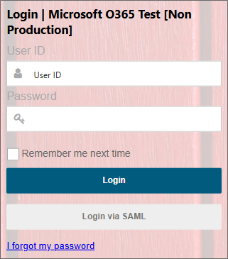
As a SAML user, you’ll still need to set up MFA to access documents in M365, though you’ll be required to authenticate on a much less frequent basis than other users.
The first time you open a document attachment for editing in Process Director, whether as a submitter or reviewer, you’ll be directed to a setup screen for M365.
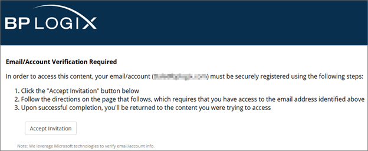
This setup screen is the first step in creating the authentication method you’ll use to access your organization’s M365 documents and applications. Begin the authentication process by clicking the Accept Invitation button. Clicking the button will open an informational screen that provides you with basic information about the data that Microsoft requires to set up your authentication..
To continue the authentication setup, click the Accept button. Once accepted, Microsoft Online will begin the process of setting up MFA via the Microsoft Authenticator App on your mobile device.
The first step in the process presents you with an informational window with a link to use a different account than your SAML account, which you should not click. Below is a link to an information page about the identity verification process.
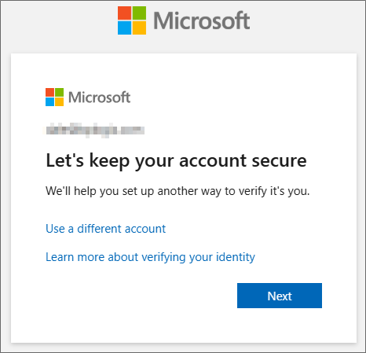
You can continue the verification process by clicking on the Next button.
The next screen is an information screen that has a link to enable you to download the authenticator app. In most cases, you won’t do this, because you’ll be using a desktop or laptop computer instead of a mobile device. As mentioned previously, you should already have downloaded the Microsoft Authenticator app to your mobile device.
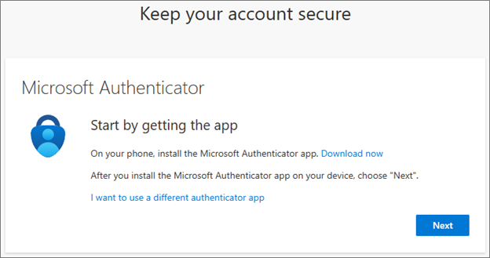
There is a link that enables you to use a different authenticator app, like Authy, but BP Logix recommends that you use the Microsoft Authenticator app.
Assuming that you’ve installed the Microsoft Authenticator app on your mobile device, you can click the Next button to continue.

The next screen will notify you that you’ll need to set up a new account in Microsoft authenticator. To do this, we’ll need to scan a unique QR code. Click the Next button to display the QR code.
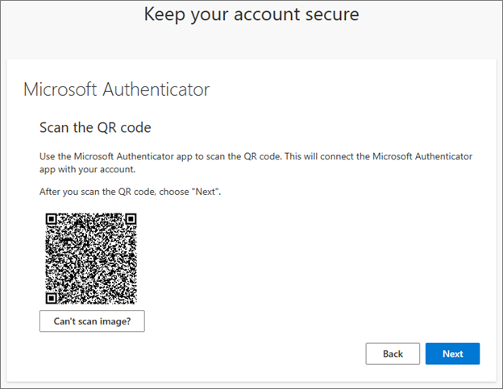
At this point, you’ll need to open the Microsoft Authenticator app on your mobile device. In the top right corner of the screen, tap the Plus (+) icon to create a new account.
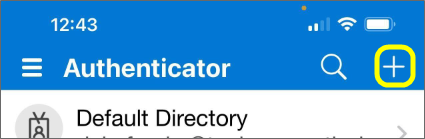
Clicking the Plus icon will open the account creation screen to enable you to choose the type of account to create.
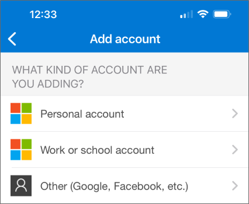
You’ll need to select the Work or school account option. When you do, additional options will appear at the bottom of the screen to display the methods available to create the account.
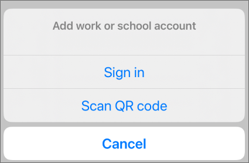
You’ll want to select the Scan QR Code option. When you do, a scanning screen will open. You’ll need to center the QR code displayed on your computer in the center of the scanning area of the mobile device screen.
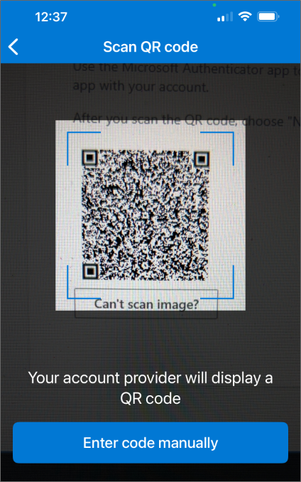
The authenticator app will scan the QR code automatically and create a new authentication account. For now, you can return to your computer and click the Next button again.
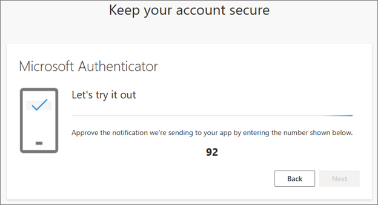
The system will automatically generate a random authenticator code and display it on the screen. In this example, the authenticator code is “92”. You’ll now need to switch back to your mobile device to enter the code in the Authenticator app.
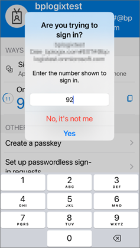
You’ll need to type in the random number that was generated (“92” in this example), then click the Yes button to confirm your identity. Once you’ve done so, your computer’s screen should be updated to notify you that the authentication was successful.
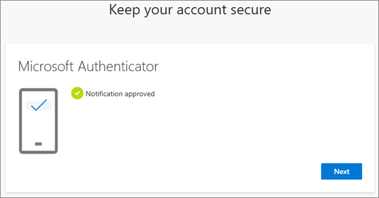
Click the Next button to acknowledge the notification and continue.
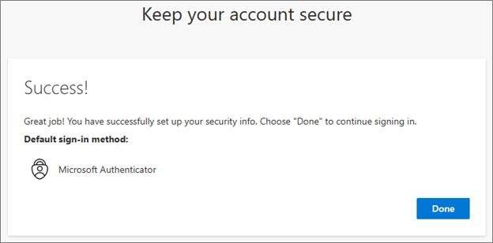
Your authentication account setup is now complete. Click the Done button to end the account creation wizard. You are now authenticated in the system and can now begin accessing document attachments via M365.
Once your account has been set up, Microsoft will, on occasion, ask you to reauthenticate when you edit a document by generating a 2-digit code that you’ll enter into the Microsoft Authenticator app.
If you are an external user that doesn’t have a network login for the organization, logging into Process Director will require that you enter the correct username and password to access Process Director. Accessing any M365 document will require that you authenticate via MFA every time you open a document. For example, if you have a Gmail address, M365 will enable you to access the document by either:
1. Sending an email to you that contains a One-Time Password (OTP) that you can copy and paste into the MFA access screen, or
2. Providing you with a 2-digit authentication code that you can enter into the Microsoft Authenticator Application.
3. Typing in the current OTP that is displayed in the Microsoft Authenticator app. This OTP refreshes every thirty seconds.
The first time you open a document attachment Process Director, you’ll be directed to a setup screen for M365.
This setup screen is the first step in creating the authentication method you’ll use to access your organization’s M365 documents. Begin the authentication process by clicking the Accept Invitation button. The system will need to send a message to your email address. In this example, we’re using a Gmail address, but the process will be the same for any non-Microsoft email system.
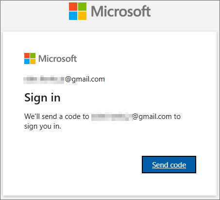
Click the Send Code button to have the email sent to your account. Within a few minutes, you should receive an email message that contains an account verification code that you’ll use as an OTP to start the authentication process.
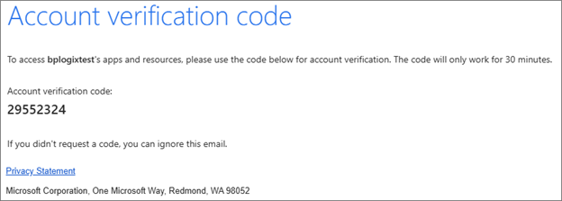
When you receive the email, you’ll need to return to Process Director to enter the account verification code in the screen provided.
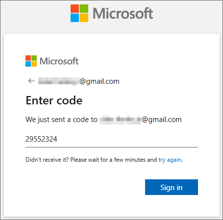
Once you’ve entered the OTP you received as the account verification code, click the Sign In button. Clicking the button will open the initial page from Microsoft.
This page provides you with basic information about the data that Microsoft requires to set up your authentication. Once you click the Accept button, Microsoft will begin the process of setting up MFA via the Microsoft Authenticator App on your mobile device.
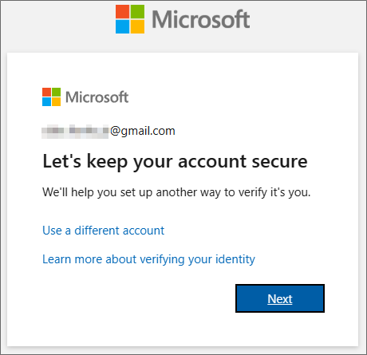
The first step in the process presents you with an informational window with a link to use a different account, which you should not click. There’s also a link that will open an information page about the identity verification process in a new window.
You can continue the verification process by clicking on the Next button.

The next screen is an information screen that has a link to enable you to download the authenticator app. In most cases, you won’t do this, because you’ll be using a desktop or laptop computer instead of a mobile device. As mentioned previously, you should already have downloaded the Microsoft Authenticator app to your mobile device.
There is a link that enables you to use a different authenticator app, like Authy, but BP Logix recommends that you use the Microsoft Authenticator app.
Assuming that you’ve installed the Microsoft Authenticator app on your mobile device, you can click the Next button to continue.
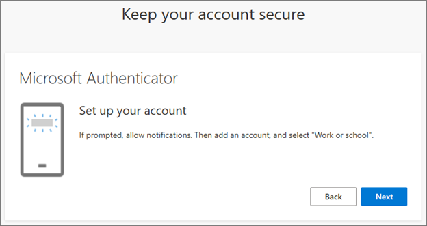
The next screen will notify you that you’ll need to set up a new account in Microsoft authenticator. To do this, we’ll need to scan a unique QR code. Click the Next button to display the QR code.
At this point, you’ll need to open the Microsoft Authenticator app on your mobile device. In the top right corner of the screen, tap the Plus (+) icon to create a new account.
Clicking the Plus icon will open the account creation screen to enable you to choose the type of account to create.
You’ll need to select the Work or school account option. When you do, additional options will appear at the bottom of the screen to display the methods available to create the account.
You’ll want to select the Scan QR Code option. When you do, a scanning screen will open. You’ll need to center the QR code displayed on your computer in the center of the scanning area of the mobile device screen.
The authenticator app will scan the QR code automatically and create a new authentication account. For now, you can return to your computer and click the Next button again. You’ll be directed to an informational screen that notifies you that a secure link will be sent to you.
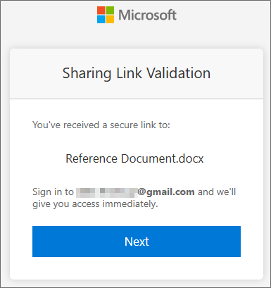
Click Next to continue, and the system will then perform a test of the Microsoft Authenticator app by automatically generating a random authenticator code and displaying it on the screen. In this example, the authenticator code is “92”.
You’ll now need to switch back to your mobile device to enter the code in the Microsoft Authenticator app.
You’ll need to type in the random number that was generated (“92” in this example), then click the Yes button to confirm your identity. Once you’ve done so, your computer’s screen should be updated to notify you that the authentication was successful.
Click the Next button to acknowledge the notification and continue.
Your authentication account setup is now complete. Click the Done button to end the account creation wizard.
Now that you have created the authentication, you’ll be required to use it every time you wish to open a M365 document in Process Director. When a document attachment is displayed on a Form, clicking the Edit link will begin the process of authenticating and opening the document inside M365. First, the link validation message will be displayed.
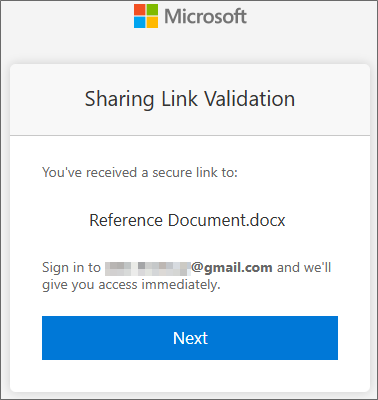
Click the Next button to continue. In the next screen, you’ll be required to confirm your email address.
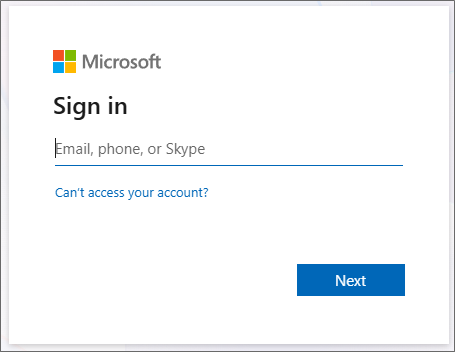
You’ll need to enter the email address that you’ve used for your account, then click the Next button. A verification code will be sent to your email address, and the screen will change to provide you with a data entry screen into which you can type the OTP that was sent to your email account.
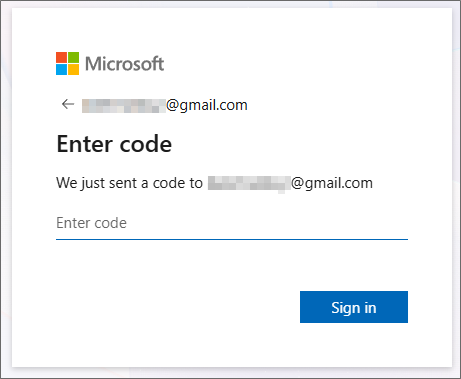
Enter the code from your email into this screen, then click the Sign In button. The next screen will display a list of accounts that you’ve set up with Microsoft.
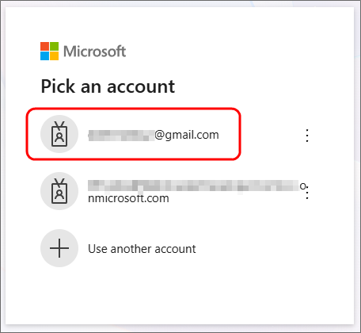
Because you may have more than one account registered with Microsoft, you’ll need to select the account you used to register with Process Director by clicking on it in the list of accounts. In this example, we’ll select the Gmail account we used to set up authentication.
Once you’ve selected the account, Microsoft will generate a 2-digit OTP again.
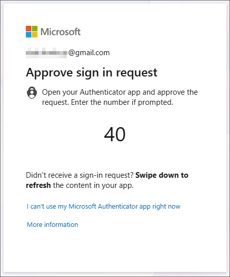
You’ll need to enter this two-digit code into the Microsoft Authenticator app, just as you did previously. Once you’ve done so, you’ll be granted access to the source document in M365.
Every time you want to access a document stored in M365, you’ll be taken through the same steps for authentication. You’ll need to both enter the OTP that you receive via email, then you’ll need to enter the 2-digit OTP into the Microsoft authenticator app.
If you are an external user that uses an email service that is controlled by Microsoft, (e.g., and outlook.com email address, You’ll have to log into Process Director using a username and password just like other external users. If you’re logged into your Microsoft email account when accessing any M365 document, Microsoft will automatically use that account login to verify your identity. In that case, M365 won't require you to set up a new MFA instance for your account before you're able to access a document. If your Microsoft account already has MFA configured, M365 might still ask for an MFA authentication by either displaying a two-digit code that you must enter into Microsoft Authenticator, or by asking you to enter the current OTP displayed in the app.
For external users that have an email account that is managed by Microsoft, such as an outlook.com email address, as we'll use here, the authentication process is slightly different. Because Microsoft manages your identity as part of your Microsoft email account, both the account creation and authentication procedures for M365 are more streamlined. If you already have MFA set up in your Microsoft-managed email account, a portion of the setup process might be skipped entirely, as we'll discuss shortly.
The first time you open a document attachment, you’ll be directed to an invitation screen for M365.
This invitation screen is the first step in creating the authentication method you’ll use to access your organization’s M365 documents and applications. Begin the authentication process by clicking the Accept Invitation button. An identity protection screen will be displayed.
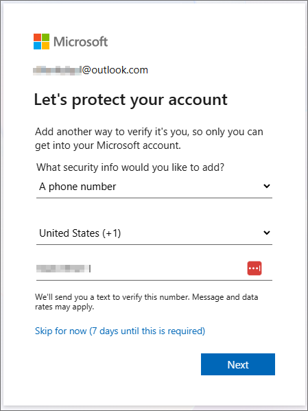
Because your email address is from a domain that Microsoft controls, you’ll be asked to provide an alternative contact method, in addition to your email address. While you can initially skip this step, you’ll be required to provide this information within seven days. Since that’s the case, we’ll go ahead and enter it now. You have the option of using either an alternative email address, or a mobile phone number as the alternative for verification. In this example, we’ll provide a mobile phone number, as that’s the most widely used option.
Once the phone number has been added, you can click the Next button, and Microsoft will send a text message to your phone that contains a 6-digit OTP. The screen will also change to enable you to enter the OTP once you receive it.
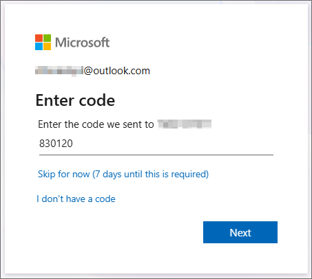
Enter the OTP you received into the space provided, then click the Next button to continue. You’ll be directed to your Microsoft email account, where you can choose to stay signed in. This option will make future authentication easier, but will keep you signed into the email account via your browser for the next 30 days.
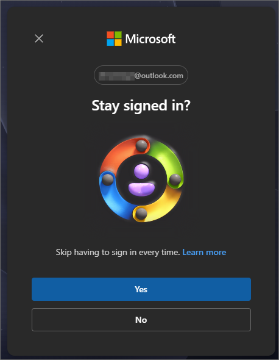
You can choose either option. If you elect not to remain signed in, you’ll need to log into this Microsoft account every time you access a document via M365. Irrespective of which option you select, you’ll be directed back to Process Director.
If you already have MFA enabled in the Microsoft account you’re using for email, you won’t be required to perform the steps below for setting up MFA again. You’ll be able to open publication documents in M365 without needing any further setup.
On the other hand, if you don’t have MFA enabled, you’ll be prompted to set it up now. You’ll be redirected to the MFA permissions screen.
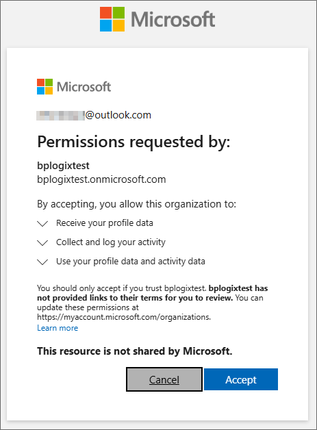
This page provides you with basic information about the data that Microsoft requires to set up your MFA authentication. To continue the authentication setup, click the Accept button.
Once accepted, Microsoft Online will begin the process of setting up MFA via the Microsoft Authenticator App on your mobile device.
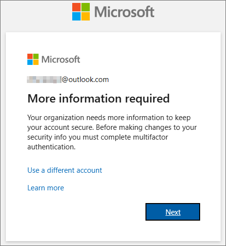
The first step in the process presents you with an informational window with a link to use a different account, which you should not click, since you'll already be logged into your email account. There’s also a link that will open an information page about the identity verification process in a new window.
Click the Next button to begin the process of setting up MFA.
The next screen is an information screen that has a link to enable you to download the authenticator app. In most cases, you won’t do this, because you’ll be using a desktop or laptop computer instead of a mobile device. As mentioned previously, you should already have downloaded the Microsoft Authenticator app to your mobile device.
There is a link that enables you to use a different authenticator app, like Authy, but BP Logix recommends that you use the Microsoft Authenticator app.
Assuming that you’ve installed the Microsoft Authenticator app on your mobile device, you can click the Next button to continue.
The next screen will notify you that you’ll need to set up a new account in Microsoft authenticator. To do this, we’ll need to scan a unique QR code. Click the Next button to display the QR code.
At this point, you’ll need to open the Microsoft Authenticator app on your mobile device. In the top right corner of the screen, tap the Plus (+) icon to create a new account.
Clicking the Plus icon will open the account creation screen to enable you to choose the type of account to create.
You’ll need to select the Work or school account option. When you do, additional options will appear at the bottom of the screen to display the methods available to create the account.
You’ll want to select the Scan QR Code option. When you do, a scanning screen will open. You’ll need to center the QR code displayed on your computer in the center of the scanning area of the mobile device screen.
The authenticator app will scan the QR code automatically and create a new authentication account. For now, you can return to your computer. Click Next to continue, and the system will then perform a test of the Microsoft Authenticator app by automatically generating a random authenticator code and displaying it on the screen. In this example, the authenticator code is “92”.
You’ll now need to switch back to your mobile device to enter the code in the Microsoft Authenticator app.
You’ll need to type in the random number that was generated (“92” in this example), then click the Yes button to confirm your identity. Once you’ve done so, your computer’s screen should be updated to notify you that the authentication was successful.
Click the Next button to acknowledge the notification and continue.
Your authentication account setup is now complete. Click the Done button to end the account creation wizard. You should now me able to access document attachments via M365.
Once MFA is set up for your Microsoft email account, you'll be required to use it at least once every browser session when you wish to open a M365 document in Process Director. If you don't close your browser window, your M365 session will probably remain active, so you won't be required to input the MFA code again. Closing the browser window resets your browser session.
If you aren’t already logged into your account, you’ll see a verification message asking you to do so.
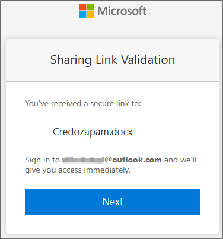
Once you’ve logged into the Microsoft account, you can click the Next button to open the document in the M365 online editor.
If you’re already logged into your Microsoft account, you’ll bypass the reminder screen, and the document will be opened directly.
Every time you want to access a document stored in M365, you’ll be asked to log into your Microsoft account, if you haven’t logged in already. Because you have a Microsoft account, Microsoft will automatically associate that account with your Process Director account.